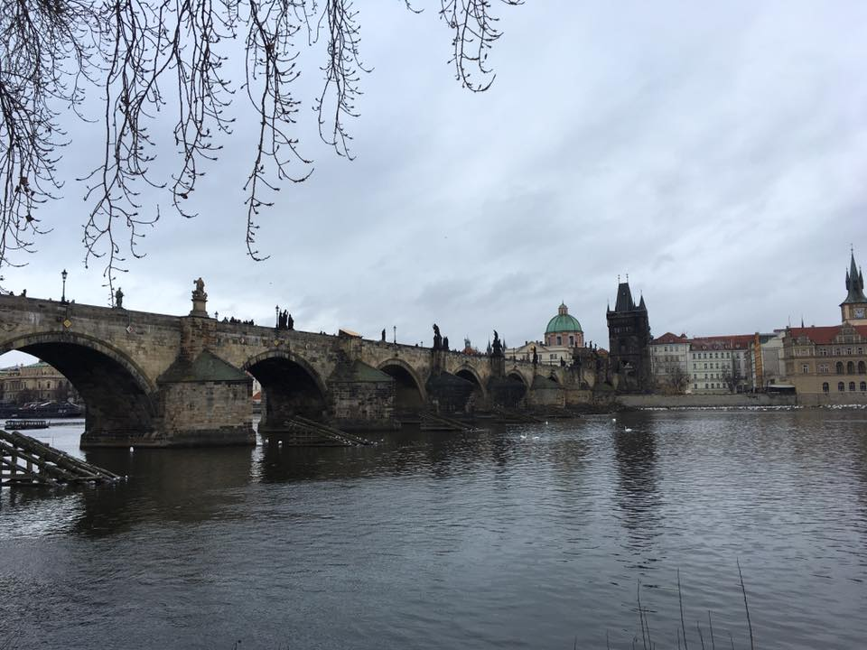
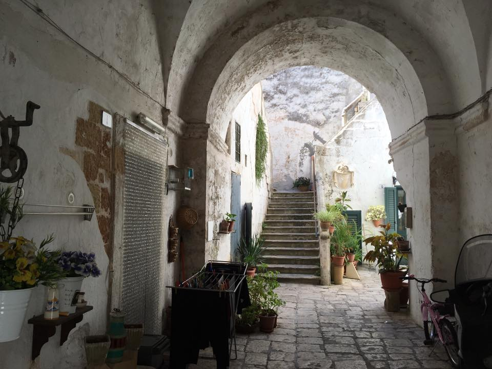
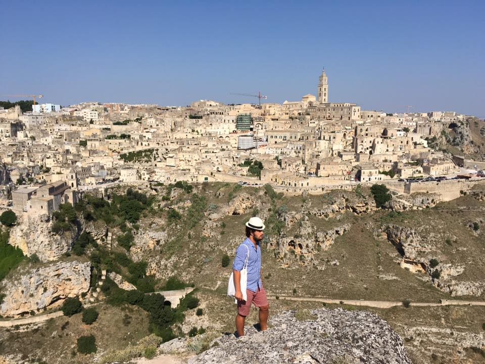
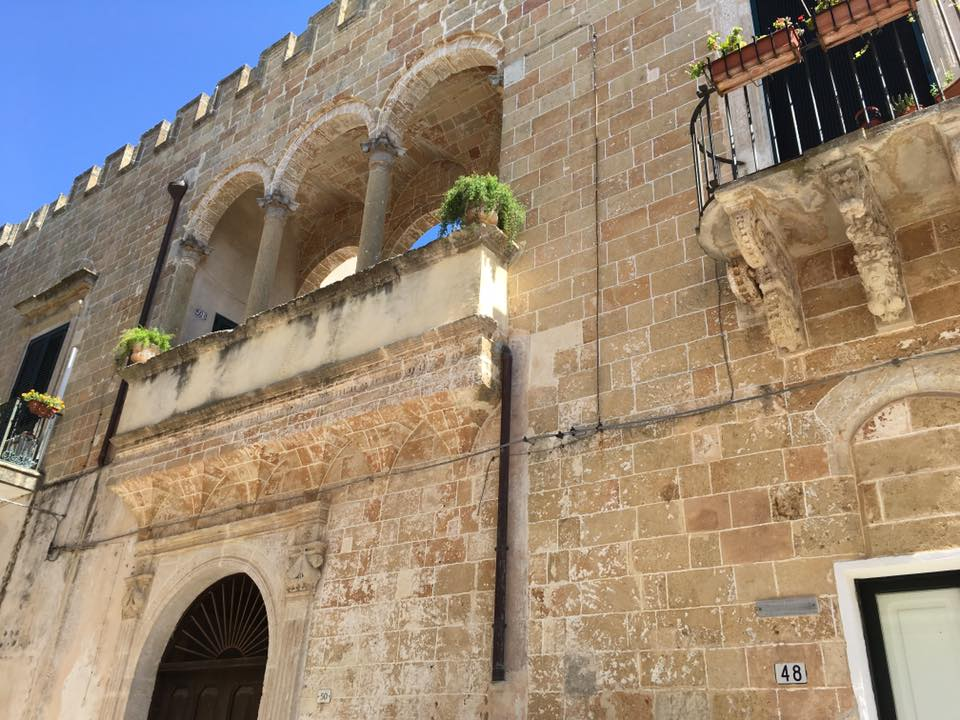
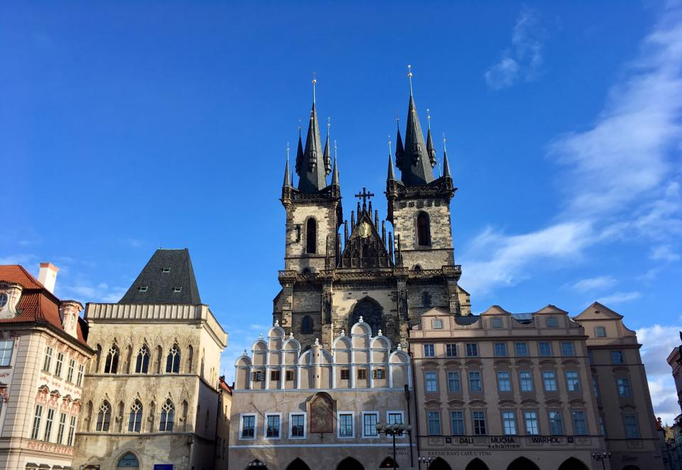

|  |
2017, Pont CharlesLe pont Charles est un pont qui relie la Vieille-Ville de Prague (Staré Město en tchèque) au quartier de Malá Strana. Construit au xive siècle, il sera le seul pont sur la Vltava (la Moldau) jusqu'en 1741. |
| Pouilles" width="240" height="160" class="image"> |
2017"Escalier Pouilles" |
| Prague" width="240" height="160" class="image"> |
2015, MateraMatera is a city in the province of Matera in the region of Basilicata, in Southern Italy. It is the capital of the province of Matera and was the capital of Basilicata from 1663 to 1806. The town lies in a small canyon carved out by the Gravina. |
|  |
2017"Italie" |
|  |
2016"Cathédrale" |